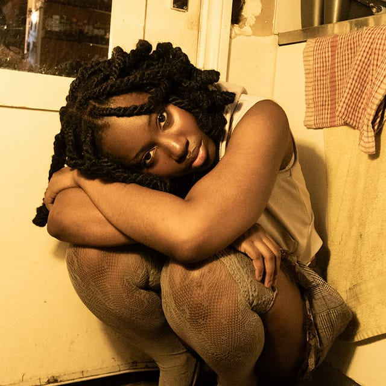
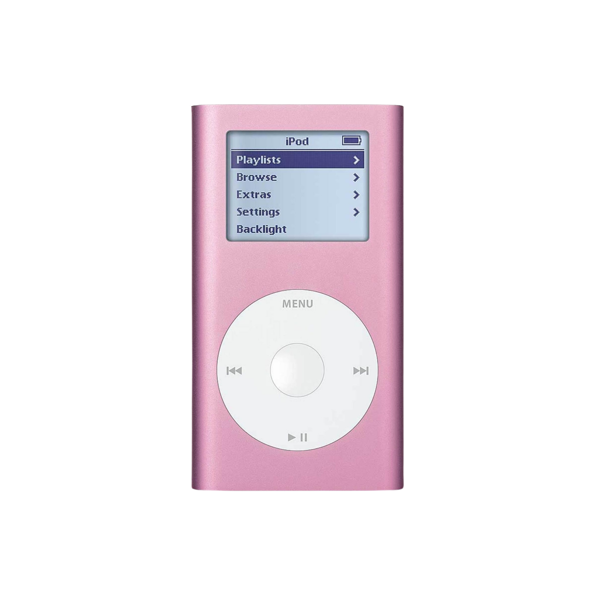

Pitchfork Paris Festival
follow pink iPod on Instagram @pink.i.pod
I met Sade Olutola after her show at the Pop Up du Label! during Pitchfork Music Festival Paris. Her beautiful puffy blue dress slipping out of her coat, she sat down next to me and tried to whisper a few words. As can happen to people who use their voice, she lost hers that night, like she had never lost it before. I think it made our encounter all the more special and vulnerable. While I burned through the capacity of my notes app, Sade whispered a few secrets and memories, as well as her next big ambitions.
As I cannot accurately reconstruct our conversation in full, I will tell you the tale of Sade Olutola as I heard it that night, in the mix of her and her team’s beautiful South London accents.
Sade Olutola could formerly be found as Vontrelle on the World Wide Web. If you are lucky or curious enough, you might still find traces of her old persona… The name stemmed from “vantablack,” the darkest shade of black in existence, and “elle,” the feminization in French. A year ago, she decided to wear her full name, to better reflect her search for authenticity and to own her roots in Nigeria. Sade describes her community as “fun and neurodivergent, people who express themselves,” and that is why she will continue using the platforms that carried her beginnings, Tumblr and SoundCloud, the hidden corners which saw the birth of her magic records. To the delight of your narrator, Sade is drawn to nostalgic tech and used to be the proud owner of a green iPod, on which she would play Beyoncé and Ariana’s records, already searching for inspiration and clues about how she might use her own gift.
Sade is a perfectionist about recording her vocals, which results in airtight and clear switches, at times sudden, between rap and singing, all built upon a very fast rhythm. One may thus have a few hypotheses on how this style could strain the vocal cords, but it is not necessarily the style, she tells me, but the lack of a vocal coach that has resulted in these unfortunate events.
If she had all the budget and time in the world, Sade would build an album much like Raye’s “This Music May Contain Hope,” built like a musical. She would have a music video for every song, which would eventually be combined into a full musical movie. For the live performances, unlike the latest UK number one, she would put less emphasis on the band and more emphasis on dancers and full production, like MJ, she tells me. Sade would be the main character in that story, and all the simple stories she would talk about (love, friendship, heartbreak) would be turned into folktale characters: vampires and other kinds. Campy and ambitious.
Regarding her next project, Sade is feeling quite a bit of pressure after the success of her last EP… The industry is hard to navigate. Much like the Sade in her future musical, she has to confront and avoid her fair share of vampires and other malign creatures. Her producer, Lucas, much like a fairy godmother or perhaps her eternal ally, is navigating this new crazy world with her. They have seen each other in every state, and have been making music, amazing music that she played on stage that night.
And to finish off this Halloween tale, what will be Sade Olutola’s song at her funeral, you may ask? “Human Nature” by MJ, of course.

Arrow Heart, her 2026 EP / SoundCloud / Tumblr
also read: Rising Stars: Sade Olutola, The Media Eye / Meet Sade Olutola, The Culture Crypt
